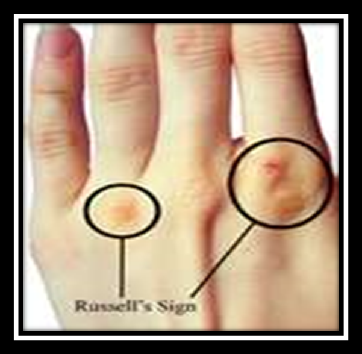
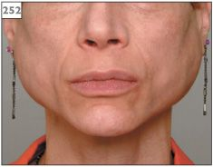
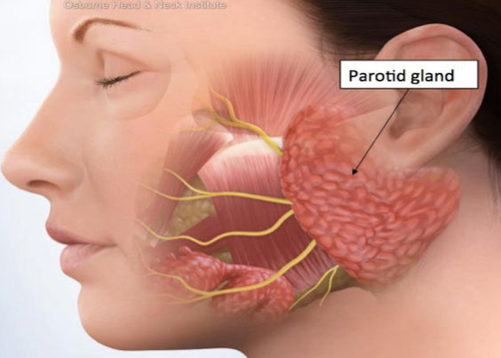

Week 4 · Topic 1
Eating & Feeding Disorders
What an Eating Disorder Is
| Term | Definition |
|---|---|
| Eating disorders | Disorders in which eating is consistently below or above the caloric need to maintain a healthy weight, occurs without hunger or fails to produce satiety, and results in physiologic imbalances or medical complications. Can be accompanied by anxiety and guilt, which varies with each disorder. |
| Satiety | Comfortable fullness. Eating that fails to produce it is one of the defining features above. |
| Binge eating | Eating, within a 2-hour period, an amount of food definitely larger than most people would eat in that time under similar circumstances, with a sense of lack of control over the eating. |
| Purging | Compensatory behavior to avoid weight gain: self-induced vomiting, or misuse of laxatives, diuretics or enemas. |
| Body mass index (BMI) | The gauge used to determine the severity of anorexia nervosa. |
Eating disorders have the second highest mortality rate of any mental illness, surpassed only by opioid addiction. About 9% of the population will have one at some point in their lifetime, across every age, race, size, gender identity, sexual orientation and background.
From Normal Eating to a Full Syndrome
Normal Eating
Risk factors accumulate and move a person off this point: low self-esteem, dieting, parental attitudes, body dissatisfaction and media ideal bodies.
Partial-Syndrome Eating Disorder
Binge eating and serious dieting appear, but not yet at full diagnostic severity.
Full-Syndrome Eating Disorder
An increase in the frequency and severity of binge eating, purging and starvation. Treatment enters here.
Etiology, Risk Factors & Comorbidity
| Factor | Detail |
|---|---|
| Neurobiological | Altered brain serotonin function contributes to the dysregulation of appetite, mood and impulse control. |
| Environmental | Childhood trauma and sexual abuse are frequently reported. Those with abuse histories have a poorer prognosis. |
| Cultural | Culture influences the development of self-concept and satisfaction with body size. |
| Developmental | Onset of puberty, major life changes or stressors, and dieting that becomes uncontrolled. |
| Personal | A vulnerable personality, perfectionism, impulsivity, being female, and a history of obesity. |
| Familial | Genetics, and family functioning style. |
| Sociocultural | Emphasis on slimness. |
Comorbidity
- Studies show an association between depression, anxiety and eating disorders.
- Many with anorexia nervosa have a lifetime history of an anxiety disorder.
- Binge and purge behavior carries comorbid alcohol or substance use problems.
- Bulimia frequently coexists with major depression, substance abuse and personality disorders.
Why These Disorders Are Hard to Treat
- Individuals with eating disorders rarely seek help.
- They are typically not motivated to change.
- They often leave treatment.
- Some recover spontaneously, others have long-term problems.
Anorexia Nervosa
A life-threatening eating disorder characterized by an intense fear of weight gain, a severely distorted body image, and restriction of calories relative to requirements with a significantly low BMI.
The Two Types
Restricting Type
Does not regularly engage in binge-eating or purging behavior. Weight loss is accomplished through dieting, fasting and excessive exercise.
Binge-Eating and Purging Type
Regularly engages in binge-eating or purging behavior: self-induced vomiting or misuse of laxatives, diuretics or enemas.
The type is assigned on the last 3 months of behavior.
DSM-5 Criteria
- Restriction of energy intake relative to requirements, leading to a significantly low body weight in the context of age, sex, developmental trajectory and physical health.
- Intense fear of gaining weight or becoming fat, or persistent behavior that interferes with weight gain, even though at a significantly low weight.
- Disturbance in the way body weight or shape is experienced, undue influence of weight or shape on self-evaluation, or persistent lack of recognition of the seriousness of the current low body weight.
Clinical Signs & Symptoms
| Finding | Detail |
|---|---|
| Low body weight | 15% or more below what is expected for age, height and activity level. |
| BMI severity | Mild at a BMI of 17 or more · moderate at 16 to 17 · severe at 15 to 16 · extreme when less than 15. |
| Amenorrhea | Loss of menstrual periods in girls and women past puberty. |
| Lanugo | Downy growth of body hair on the face and back. |
| Skin | Mottled, cool skin on the extremities, and peripheral edema. |
| Vital signs | Low blood pressure, pulse and temperature. |
| Energy | Lack of energy, fatigue and muscular weakness. |
| Other | Constipation, abnormal lab values, impaired renal function, decreased bone density, and anemic pancytopenia. |
Epidemiology & Etiology
| Factor | Detail |
|---|---|
| Prevalence | Lifetime prevalence 0.5%. Less common than bulimia nervosa. |
| Sex ratio | 3:1 female to male. |
| Onset | Commonly adolescence or young adulthood. Uncommon before puberty or after age 40. |
| Higher-risk groups | Athletes in sports emphasizing aesthetics or leanness for competitive advantage, regardless of gender. Prevalence may also be higher among people who identify as LGBTQ+. |
| Biological | Genetic and familial predisposition. Genetic correlations with major depressive disorder, anxiety disorders, OCD and schizophrenia. Neurobiologically, tryptophan and its impact on serotonin synthesis. |
| Psychological | An ego-syntonic disorder: the person knows the actions are harmful but believes the benefits outweigh the harm. Significant struggle with emotional identification, regulation and processing, with low distress tolerance. |
| Environmental | Internalization of a thin body ideal, associated with cultures that value thinness. |
| Comorbidity | Bipolar disorder, anxiety disorders, OCD, depressive disorders, PTSD and trauma-related disorders, and alcohol or substance use disorders. |
Warning Signs & Clinical Course
Warning Signs
- Dramatic weight loss.
- Preoccupation with weight, food, calories, fat grams and dieting.
- Refusal to eat certain foods, progressing to restriction against whole categories of food.
- Frequent comments about feeling fat despite weight loss, and denial of hunger.
- Food rituals: eating foods in certain orders, excessive chewing, rearranging food on a plate.
- Consistent excuses to avoid mealtimes, and excessive, rigid exercise to burn off calories despite weather, fatigue, illness or injury.
- Withdrawal from usual friends and activities.
Clinical Course
- A chronic condition with relapses characterized by significant weight loss. The 1-year relapse rate is about 50%.
- Patients often continue to be preoccupied with food.
- 10% to 25% go on to develop bulimia nervosa.
- 1 in 5 anorexia nervosa deaths is by suicide.
- Poor outcome relates to a lower initial minimum weight, the presence of purging, and an earlier age of onset.
- Difficult to treat, but recovery can occur.
Suicide screening belongs in every eating disorder assessment and is covered in full in Suicide
Complications of Weight Loss and Starvation
| System | Complications |
|---|---|
| Cardiac | Bradycardia, hypotension, loss of cardiac muscle, small heart, arrhythmias, chest pain, sudden death. |
| Metabolic | Hypothyroidism producing lack of energy, weakness, cold intolerance and bradycardia. Also hypoglycemia and electrolyte abnormalities. |
| Musculoskeletal | Loss of muscle mass and fat, and early onset osteoporosis. |
| Gastrointestinal | Delayed gastric emptying, bloating, constipation, abdominal pain, gas and diarrhea, GERD, hemorrhoids. |
| Reproductive | Amenorrhea, irregular periods, loss of libido, infertility. |
| Dermatologic | Dry, cracking skin and brittle nails from dehydration, lanugo, edema, acrocyanosis, hair thinning, yellowish discoloration, poor wound healing. |
| Hematologic | Leukopenia, anemia, thrombocytopenia, hypercholesterolemia, hypercarotenemia. |
| Neuropsychiatric | Abnormal taste sensation possibly from zinc deficiency, apathetic depression, mild organic mental symptoms, sleep disturbance, fatigue. |
Anorexia: Treatment & Hospitalization
Criteria for Hospitalization in Anorexia Nervosa
- Extreme electrolyte imbalance, or weight below 75% of ideal body weight
- Less than 10% body fat
- Daytime heart rate less than 50 beats per minute
- Systolic blood pressure less than 90
- Temperature less than 96 degrees Fahrenheit
- Arrhythmias
Initial Goals
Depend on the acuity of the patient.
- Initiating nutritional rehabilitation.
- Health teaching and health promotion.
Hospitalization is usually necessary, with intensive therapies, then outpatient partial hospitalization once stabilized.
Later Goals
- Resolving conflicts around body image disturbance.
- Increasing effective coping.
- Addressing underlying conflicts relating to maturity fears and role conflict.
- Assisting the family with healthy functioning and communication.
Weight Restoration
Once medically stable, a weight restoration program begins that allows for incremental weight gain, with a treatment goal set at 90% of ideal body weight. It runs on precise mealtimes, adherence to a selected menu, observation during and after meals, regularly scheduled weighing, and constant monitoring during bathroom trips. During refeeding the patient participates in milieu therapy focused on eating behavior and the underlying anxiety, dysphoria, low self-esteem and lack of control.
Refeeding Syndrome
A serious and potentially fatal condition that can occur during refeeding, caused by sudden shifts in the electrolytes that help the body metabolize food.
Biological & Psychological Treatments
| Approach | Detail |
|---|---|
| Pharmacotherapy | No FDA-approved medications, and research does not support pharmacological agents. Fluoxetine has proven helpful for obsessive-compulsive behavior, but only after the patient has reached a maintenance weight. |
| Integrative therapy | Yoga, massage, acupuncture or bright light therapy. |
| Psychological therapy | No empirical evidence supports any specific psychotherapy model in adults. In adolescents there is evidence for insight-oriented therapy, family-based treatment, adolescent-focused therapy and CBT. |
| Long-term | Provided on an outpatient basis to maintain weight: individual, family and group therapy, plus nutrition counseling. |
Bulimia Nervosa
An eating disorder in which the individual engages in recurrent episodes of uncontrollable binge eating followed by compensatory behavior to avoid weight gain through purging methods such as self-induced vomiting, laxatives, diuretics or excessive exercise. A binge runs between 1,500 and 5,000 calories within a 2-hour period.
DSM-5 Criteria
- Recurrent episodes of binge eating, meaning both an amount definitely larger than most would eat in a 2-hour period, and a sense of lack of control over the eating.
- Recurrent inappropriate compensatory behaviors to prevent weight gain: self-induced vomiting, misuse of laxatives or diuretics, fasting, or excessive exercise.
- Both occur, on average, at least once a week for 3 months.
- Self-evaluation is unduly influenced by body shape and weight.
- The disturbance does not occur exclusively during episodes of anorexia nervosa.
Epidemiology & Etiology
| Factor | Detail |
|---|---|
| Prevalence | Lifetime prevalence 2.3% for women and 0.5% for men. |
| Sex ratio | 10:1 female to male. |
| Onset | Later adolescence, peaking into young adulthood. Rare under age 12 and over age 40. Incidence is increasing in women between 25 and 45. |
| Comorbidity | Nearly half have a comorbid mood disorder. More than half have a comorbid anxiety disorder. Nearly 1 in 10 have a substance use disorder, usually alcohol. |
| Biological | Genetic and familial predisposition. Neuropathological changes in the brain may be due to eating dysregulation. Biochemically, lower brain serotonin. |
| Psychological | Anxiety disorders or low self-esteem, impulsivity and compulsivity, chaotic non-nurturing family relationships, and difficult interpersonal relationships. Triggers: stress, poor body self-image, food, restrictive dieting or boredom. |
| Environmental | Childhood sexual or physical abuse, traumatic events and environmental stress. Internalization of a thin body ideal, and weight-based teasing or bullying. |
| Risk factors | Binge-eating behaviors, a history of anorexia nervosa in a quarter to a third of patients, depressive signs and symptoms, problems with interpersonal relationships, impulsive behaviors, increased anxiety and compulsivity, and possible substance use disorders. |
Clinical Course
Why It Goes Unnoticed
- Few outward signs. Patients initially do not appear physically ill.
- Often at or close to normal weight.
- Binge and purge in secret, so it does not come to the attention of others.
- Treatment is often delayed for years, and is usually initiated when control of eating is lost.
- Once treatment is complete there is typically complete recovery, except where depression or personality disorders are present.
How Patients Present
- Overwhelmed and overly committed "social butterflies" who have difficulty setting limits and establishing boundaries.
- They hold enormous rules about food and food restriction.
- They feel shame, guilt and disgust about their binge eating and purging.
- They may be compulsive and impulsive in other areas of their life.
Bulimia: Warning Signs, Complications & Treatment
| Sign | Detail |
|---|---|
| Russell's Sign | Calluses or scars on the back of the hands and knuckles from self-induced vomiting. |
| Parotid swelling | Unusual swelling of the cheeks or jaw area. |
| Dental | Erosion of dental enamel, dental caries, and discoloration or staining of the teeth. Also xerostomia and tooth decay. |
| Evidence of bingeing | Disappearance of large amounts of food in short periods, or wrappers and containers indicating large consumption. |
| Evidence of purging | Frequent trips to the bathroom after meals, signs or smells of vomiting, packages of laxatives or diuretics. |
| Behavioral | Excessive, rigid exercise, lifestyle schedules or rituals that make time for binge-and-purge sessions, and withdrawal from friends and activities. |
| Cardiac | Ipecac cardiomyopathy and arrhythmias. |
| Neuropsychiatric | Seizures, fatigue, weakness, mild organic mental symptoms. |



Treatment
| Approach | Detail |
|---|---|
| Setting | Usually outpatient, unless the patient is suicidal or past outpatient treatment has failed. Hospitalize for life-threatening complications or suicide risk. |
| Focus of care | Stabilizing and normalizing eating to interrupt the binge-purge cycle, restructuring dysfunctional thoughts about eating, weight and shape, and teaching healthy boundary setting. |
| Behavioral technique | Using a diary to record binges and purges along with the precipitating emotions and environmental cues. |
| Pharmacotherapy | SSRIs are effective in treating binge eating and purging. Fluoxetine is the only FDA-approved medication for bulimia nervosa in adults, and is most effective in conjunction with CBT. |
| Psychological therapy | CBT is first-line treatment. Also DBT, group psychotherapy and support groups. Family therapy is not usually used, because of the age of the individual. |
Binge-Eating Disorder
An eating disorder characterized by recurrent episodes of binge eating, with marked distress and impaired control over the behavior. It is the most common eating disorder.
DSM-5 Criteria
- Recurrent episodes of binge eating, with both the large amount in a 2-hour period and the sense of lack of control.
- Episodes associated with three or more of the following: eating much more rapidly than normal · eating until uncomfortably full · eating large amounts when not physically hungry · eating alone because of embarrassment over how much one is eating · feeling disgusted, depressed or very guilty afterward.
- Marked distress regarding binge eating is present.
- Occurs, on average, at least once a week for 3 months.
- Not associated with recurrent compensatory behavior as in bulimia nervosa, and does not occur exclusively during bulimia or anorexia nervosa.
Epidemiology & Comorbidity
- Lifetime incidence 3.6% for women and 2.1% for men, and it is prevalent among females.
- All racial and ethnic groups are represented fairly equally.
- Occurs in normal-weight, overweight and obese individuals.
- About half the risk is genetic.
- 79% have another psychiatric disorder, most often specific phobia, social phobia, PTSD and alcohol abuse or dependence.
- History of trauma, adverse childhood events and food insecurity.
Health Consequences
- Hypertension
- High cholesterol levels
- Heart disease
- Diabetes mellitus
- Gastrointestinal diseases
- Gallbladder disease
- Musculoskeletal problems
Treatment
- Hospitalization is not usually required. Treatment is outpatient.
- Health teaching and health promotion: healthy eating and exercise.
- Pharmacotherapy: SSRIs and lisdexamfetamine dimesylate.
- Psychological: individual or group CBT, DBT, and support groups.
- Assessment includes the nutritional pattern, the history of weight cycling, and a careful history of binge-eating triggers, foods and frequency.
Comparing the Three Eating Disorders
| Feature | Anorexia Nervosa | Bulimia Nervosa | Binge-Eating Disorder |
|---|---|---|---|
| Weight | Significantly low BMI | Typically normal | Normal, overweight or obese |
| Compensatory behavior | Only in the binge-purge type | Always present | Absent |
| Lifetime prevalence | 0.5% | 2.3% women, 0.5% men | 3.6% women, 2.1% men |
| Sex ratio | 3:1 | 10:1 | Prevalent among females |
| Onset | Adolescence or young adulthood | Later adolescence, mean onset 18 | Adulthood |
| Severity | Life-threatening | Generally not life-threatening | Medical consequences of obesity |
| Usual setting | Hospitalization usually necessary | Usually outpatient | Outpatient |
| Medication | None FDA-approved | Fluoxetine, FDA-approved | SSRIs, lisdexamfetamine dimesylate |
| Outcome | Outcomes poorer, mortality higher | Outcomes better, mortality lower | Responds to CBT |
The Three Feeding Disorders
| Disorder | What It Is | Onset & Risk | Treatment |
|---|---|---|---|
| Pica | Ingestion of substances that have no nutritional value, such as dirt or paint. | Usually begins in early childhood and lasts a few months, but can appear in adolescence or adulthood. Males and females affected equally. Among institutionalized children prevalence may be as high as 26%. | Monitoring the eating behavior is essential. Behavioral interventions such as rewarding appropriate eating can help. |
| Rumination disorder | Undigested food is returned to the mouth, then rechewed, reswallowed or spit out. | May be diagnosed after 1 month of symptoms. Can begin at any age, but in infants onset is usually between 3 and 12 months. More frequent among people with intellectual disabilities. Childhood neglect is a predisposing factor. | Repositioning infants and small children during feeding. Improving caregiver and child interaction and making mealtimes pleasant. Distracting the child when the behavior starts. Family therapy may be required. |
| Avoidant/Restrictive Food Intake Disorder | Food avoidance that can result in significant weight loss, nutritional deficiency, dependence on supplements or enteral feeding, and marked interference with functioning. Avoidance may relate to strong dislikes of the sensory qualities of food: appearance, color, smell, texture, temperature and taste. | Males and females equally affected. Personal anxiety and family anxiety are risk factors. | Primary treatment is behavioral modification to increase regular food consumption. Families need support and education in behavioral techniques, but family therapy is not usually necessary. Treating anxiety and depressive symptoms may help. |
Self-Test Flashcards
Click a card to flip it and check your answer.